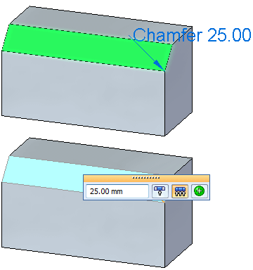

Chamfer Recognition command
Use the Chamfer Recognition command to detect equal setback chamfers in an imported model. The Chamfer Recognition command is located on the Home tab→Solids group→Round list.
When recognition is complete, the Chamfer Recognition dialog box appears with the recognition results. If no recognizable chamfers are detected, a message box appears stating “No recognizable chamfers were found." The dialog box contains a row for each chamfer or set of connected chamfers detected. All detected chamfers are checked for conversion to chamfer features. Clear the check box if you do not want the detected chamfers to convert to a synchronous chamfer feature. Click the OK button to perform the conversion.

How do I
Replace circular cutouts with hole featuresRecognize a hole pattern
Recognize a pattern
Learn more
Feature recognitionRecognizing holes
Hole pattern recognition
Look up more details
Recognize Holes commandRecognize Holes dialog box
Recognize Hole Patterns command
Hole Pattern Recognition dialog box
Recognize Patterns command